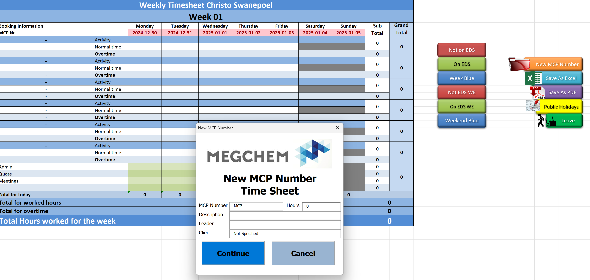
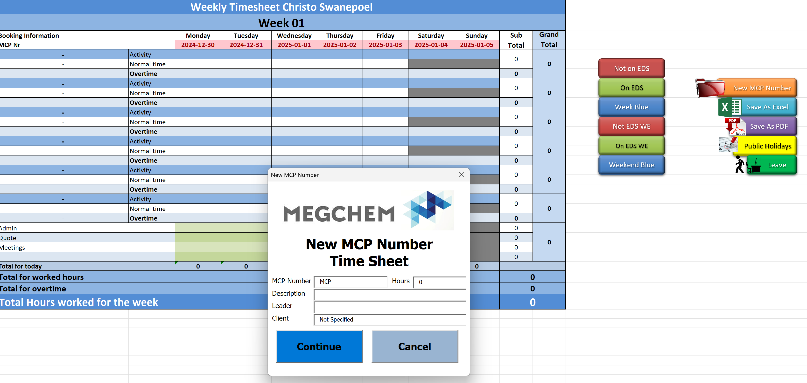

My completed work
This is my VBA projects. Here are some of my VBA projects. While I have created many, these are the ones I’d like to showcase.
This is my scanning projects, modeling and data analysis


Hi, I'm Christo! I am a Principal Measurement Technician who loves 3D laser scanning, scan data, programming, and 3D CAD modeling and The best part? It’s both my passion and my profession.
I enjoy programming and problem-solving, always looking for ways to make work faster and easier through automation. I have built various Excel VBA programs, including a budget tracker, a checklist system for the lab, and a timesheet management tool.
Outside of work, I am a husband and father, and my family is the most important part of my life. I love spending time with them and always try to be a good example. I also enjoy morning gym sessions, which keep me active and motivated for the day.
I have a passion for woodworking. Additionally, I own a 3D printer, which I use for various creative and practical projects.
This is my VBA projects. Here are some of my VBA projects. While I have created many, these are the ones I’d like to showcase.
This is my scanning projects, modeling and data analysis
| My hobbies | Description |
|---|---|
| 3D Laser Scanning |
Capturing precise measurements and analyzing scans
|
| Programming |
Developing automation tools and custom scripts
|
| Email address | Phone Number | Social Media | Curriculum Vitae |
|---|---|---|---|
| christo.swanepoeljc@gmail.com | +27 82 724 9435 | Please look at my CV |
"Your work is going to fill a large part of your life, and the only way to be truly satisfied is to do what you believe is great work. And the only way to do great work is to love what you do."
--Steve Jobs--